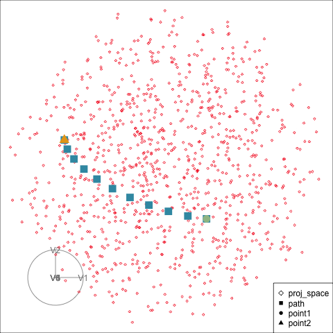
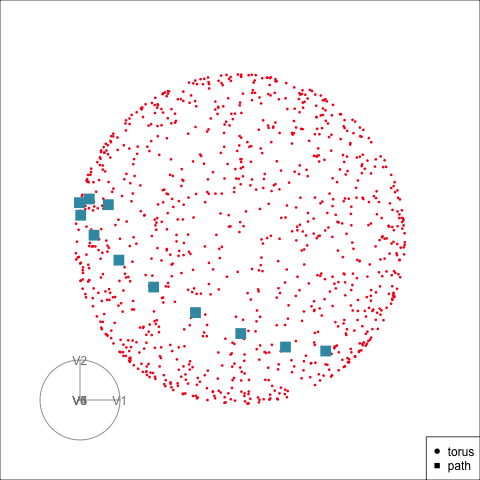
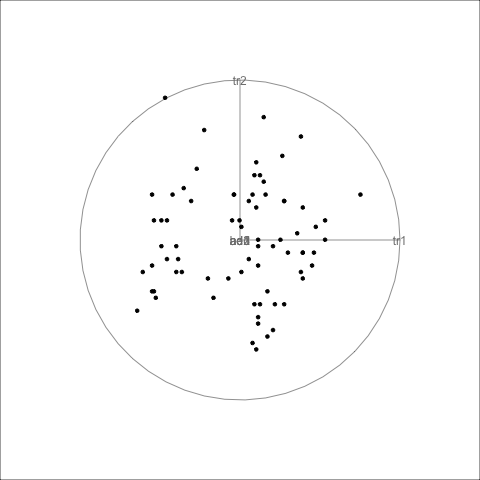

This vignette will demonstrate how to plot the interpolated path with the woylier package.
library(woylier)
library(geozoo)
library(ggplot2)
library(dplyr)
#>
#> Attaching package: 'dplyr'
#> The following objects are masked from 'package:stats':
#>
#> filter, lag
#> The following objects are masked from 'package:base':
#>
#> intersect, setdiff, setequal, union
library(purrr)1D example
1D projection of data in high dimension linear combination of data that is normalized. Therefore, we can plot the point on the surface of a hypersphere. The plot below the Givens interpolation steps between 2 points, 1D projection of 6D data that is.
# Generate 1D example
set.seed(2022)
p <- 6
base1 <- tourr::basis_random(p, d=1)
base2 <- tourr::basis_random(p, d=1)
# First example
frames <- givens_full_path(base1, base2, nsteps = 10)
sp <- generate_space_view(p=p)
sp_path <- add_path(sp, frames)
point1 <- as.data.frame(t(base1))
point1$type <- "point1"
point2 <- as.data.frame(t(base2))
point2$type <- "point2"
sp_path <- rbind(sp_path, point1, point2)
cex <- c(rep(0.5, 1000), rep(2, nrow(sp_path)-1000))
tourr::animate_xy(sp_path[,1:p],
col=sp_path$type,
cex=cex,
pch=factor(sp_path$type),
axes="bottomleft")
# Save the result as an animated gif
tourr::render_gif(sp_path[,1:p],
tourr::grand_tour(),
tourr::display_xy(
col=sp_path$type,
cex=cex,
pch=factor(sp_path$type),
axes="bottomleft"),
gif_file = "path1d.gif",
frames = 50)
2D example
In case of 2D projections, we can plot the interpolated path between 2 frames on the surface of torus. Torus can be seen as crossing of 2 circles that are orthonormal.
# Generate 2D example
set.seed(2022)
n <- 1000
p <- 3
d <- 2
base1 <- tourr::basis_random(p, d)
base2 <- tourr::basis_random(p, d)
frames_2d <- givens_full_path(base1, base2, 10)
proj_2d <- map(1:n, ~tourr::basis_random(n = p, d=d)) %>%
purrr::flatten_dbl() %>%
matrix(ncol = p*2, byrow = TRUE) %>%
as_tibble()
# Path
path_2d <- t(apply(frames_2d, 3, c)) %>%
as.data.frame()
# Join
proj_2d <- proj_2d %>%
mutate(type="torus")
path_2d <- path_2d %>%
mutate(type="path")
proj_path <- bind_rows(proj_2d, path_2d)
cex <- c(rep(0.5, 1000), rep(2, nrow(proj_path)-1000))
tourr::animate_xy(proj_path[,1:6],
col=proj_path$type,
cex=cex,
pch=factor(proj_path$type),
axes="bottomleft")
# Save the result as an animated gif
tourr::render_gif(proj_path[,1:6],
tourr::grand_tour(),
tourr::display_xy(
col=proj_path$type,
cex=cex,
pch=factor(proj_path$type),
axes="bottomleft"),
gif_file = "path2d.gif",
frames = 50)
Application
You can now use the frame to frame interpolation instead of geodesic interpolation with any tour.
# This uses geodesic interpolation
tourr::animate_xy(flea[,1:6])
tourr::render_gif(flea[,1:6],
tourr::grand_tour(),
tourr::display_xy(),
gif_file = "geodesic.gif",
frames = 50)
# And this uses the Givens interpolation
tourr::animate_xy(flea[,1:6], woylier::grand_tour_givens())
tourr::render_gif(flea[,1:6],
woylier::grand_tour_givens(),
tourr::display_xy(),
gif_file = "givens.gif",
frames = 50)Below are the two types of interpolation. Mostly geodesic is the method to use, because all movement is outside of the current projection. The Givens interpolation can be annoying because the data spins within the view too. This is occasionally useful to ensure that a particular frame is reached.
